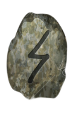
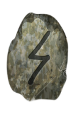
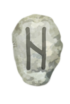
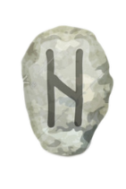

About the Film
Synopsis
On a remote island battered by restless tides, Isla, a young marine biologist begins hearing whispers from the deep, haunting voices that no one else can hear. Drawn into the ocean’s mysteries, they uncover fragments of a long-lost civilisation swallowed by the sea and bound to an ancient guardian. As dreams blur into reality and the whispers grow louder, they must decide whether to embrace the call of the deep or risk unleashing a forgotten power upon the world above.
Blending myth and science, Echoes of the Sea is a cinematic journey into the unknown, where the ocean is both sanctuary and threat, and every wave carries a secret older than memory itself.
Director’s Vision
Echoes of the Sea was born from a fascination with the spaces where human imagination collides with the natural world. For the director, the ocean has always been more than a backdrop—it is a living presence, a force that holds memory, history, and mystery within its depths.
Her vision was to create a film that treats the sea not just as setting, but as a character in its own right: alluring, dangerous, and deeply ancient. By weaving together myth, fantasy, and science, she sought to immerse audiences in a story that feels both timeless and urgent—a reminder of how much we have forgotten, and how much remains hidden beneath the waves.
Origins of the Idea
The spark for the film came during a solitary dive off a rugged coastline where the director grew up. Descending into the stillness, she felt surrounded by silence yet overwhelmed by the sensation of countless unseen lives. Later, she described it as if “the ocean itself was trying to speak.” That moment became the seed for Echoes of the Sea.
Director’s Profile
Amara Vey was born on April 12, 1982, in Monterey, California. Growing up along the Pacific coast, she developed a deep connection to the sea and its stories, often sketching marine life and recording the sounds of waves as a child.
After studying film at UCLA, Amara began her career in documentary filmmaking, exploring themes of nature and human connection. Echoes of the Sea is her most personal work yet—drawing on her lifelong fascination with myths of the ocean and her belief that the sea holds both memory and mystery waiting to be uncovered.
Combining her lifelong love of coastal folklore with her background in documentary filmmaking, she began sketching a story that would bridge human vulnerability and oceanic myth. What began as fragments of journal notes and dreamlike images slowly evolved into the tale of a lost civilization, a guardian creature, and the voices that refuse to be silenced by time.
Discover the Characters
Click on a rune and reveal a character.

 

 
